Vineri dimineața: o cădere este un eveniment advers?
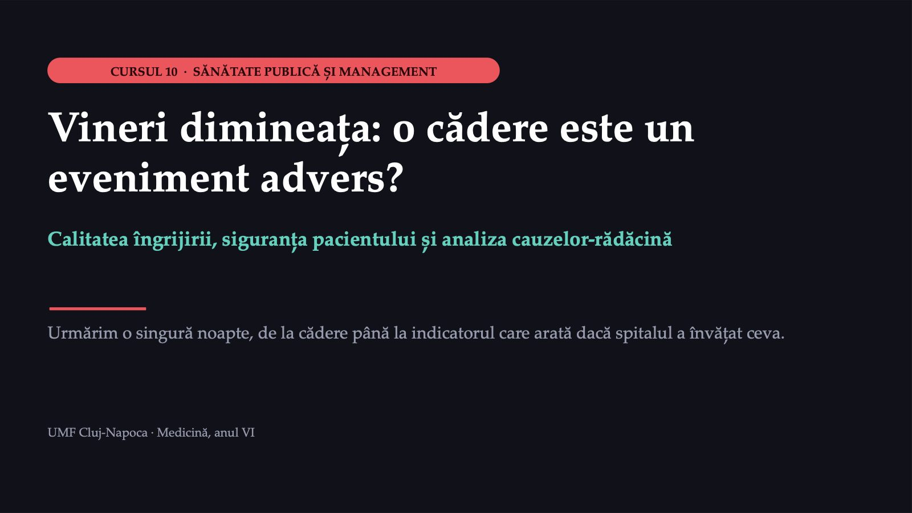
1 / 58Domnul R., noaptea de joi spre vineri
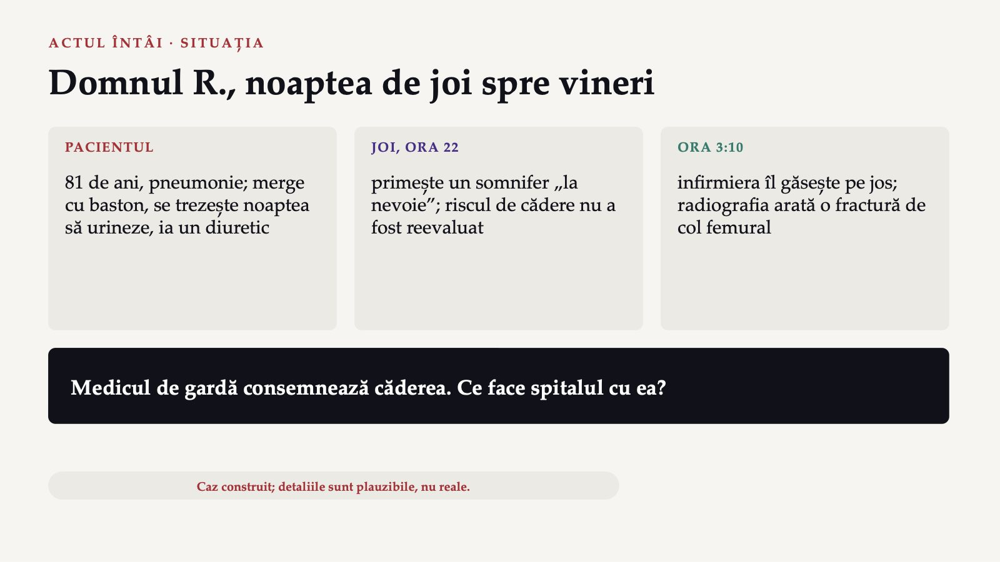
2 / 58Sunteți medicul de gardă: ce faceți cu căderea, în afară de tratament?
![MENTIMETER · VOTUL 1 PRIMA DECIZIE Sunteți medicul de gardă: ce faceți cu căderea, în afară de tratament? A Raportez intern, îl informez pe medicul curant și familia, cu fapte, nu cu vinovați B Cer asistentei de noapte o notă explicativă, ca să se stabilească cine a greșit C Nu raportez nimic: la 81 de ani căderile sunt de așteptat, iar fractura e o complicație a vârstei D Aștept să văd dacă familia face o reclamație și raportez numai atunci Vot individual, fără discuție. Răspundeți pe telefon, la codul afișat.](diapozitive/C10/003.jpg) 3 / 58
3 / 58Convingeți-l pe colegul care a votat altfel
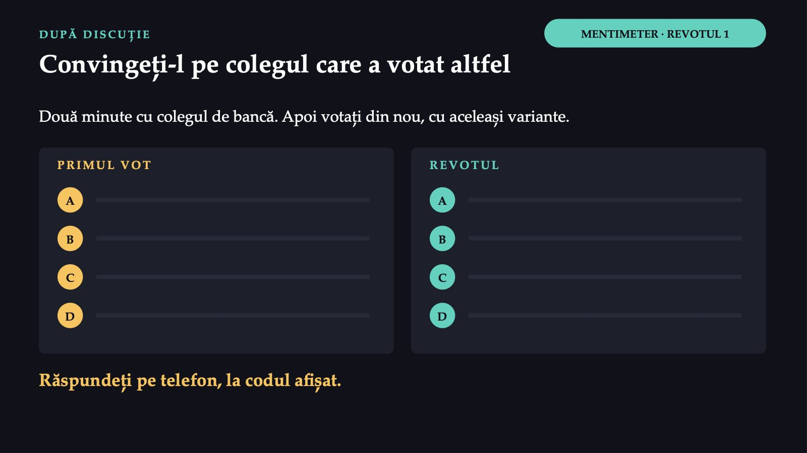
4 / 58Siguranța este o proprietate a sistemului
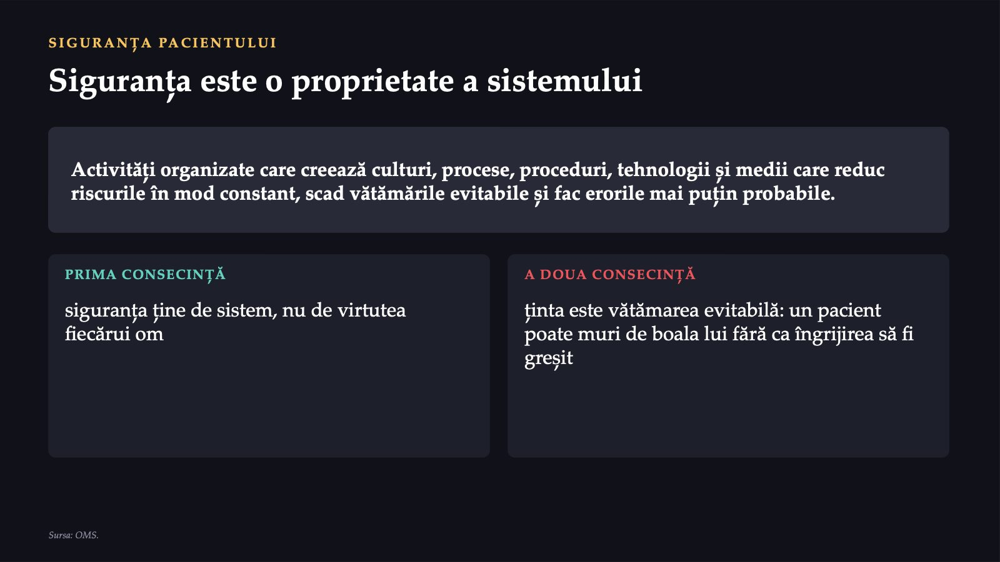
5 / 58Patru cuvinte, patru urmări
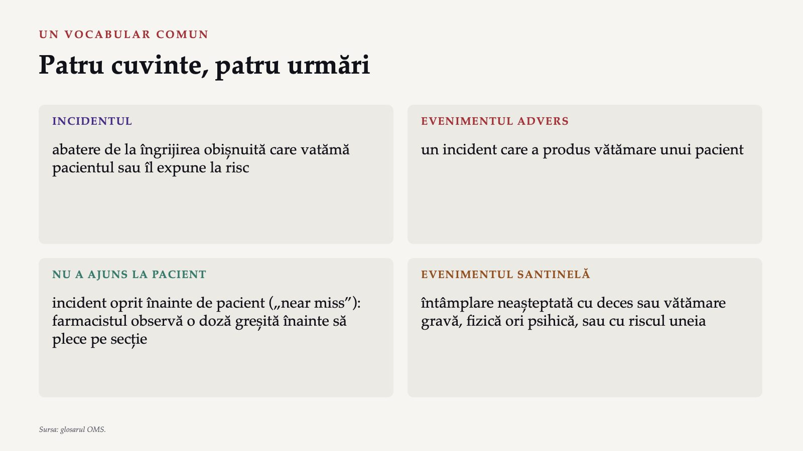
6 / 58Răspunsul apare după ședință
Răspunsul apare după ședință
≈ 12%
 8 / 58
8 / 58Căderile, cel mai frecvent eveniment advers din spital
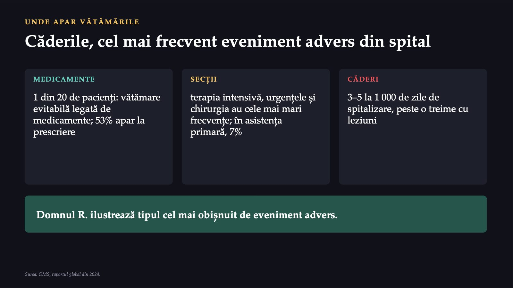
9 / 58O valoare mică nu dovedește siguranța
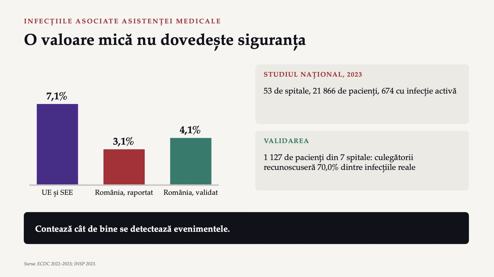
10 / 58Un spital nu învață din ce nu știe
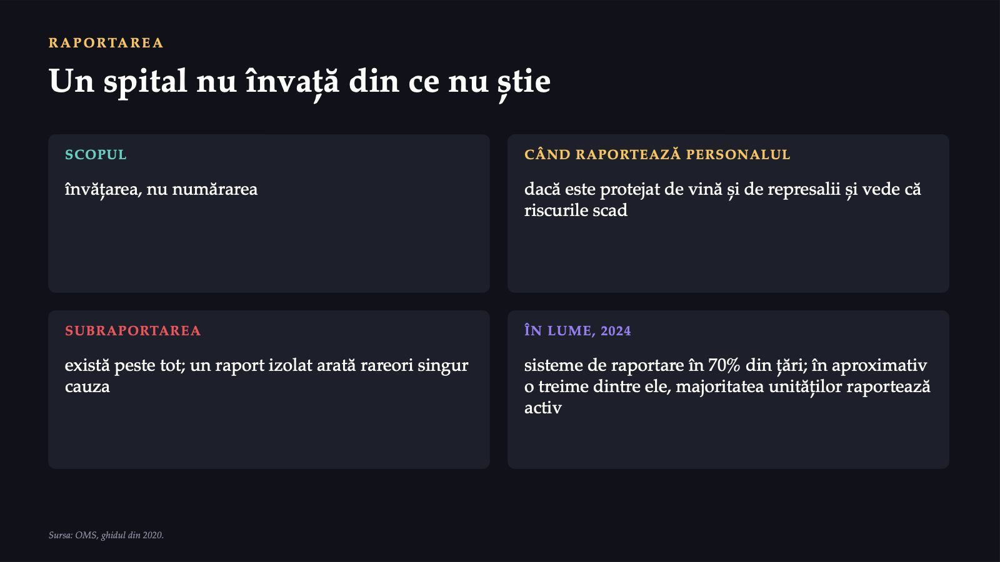
11 / 58Legea cere raportare fără caracter acuzator
![RAPORTAREA ÎN ROMÂNIA Legea cere raportare fără caracter acuzator LEGEA NR. 185/2017 ANMCS elaborează o metodologie de raportare „fără caracter acuzator” (art. 5) STANDARDELE DE ACREDITARE registru al riscurilor, sistem pentru evenimentele santinelă, protecția celor care raportează, sprijin psihologic CE NU REZULTĂ textul legii nu spune că raportul ar fi protejat juridic Spitalul dumneavoastră are, sau trebuie să aibă, un circuit intern de raportare. Sursa: Legea nr. 185/2017; standardele ANMCS, ediția a III-a.](diapozitive/C10/012.jpg) 12 / 58
12 / 58Răspunsul apare după ședință
Răspunsul apare după ședință
Luni, plângerea familiei
 14 / 58
14 / 58Cașcavalul elvețian: apărări cu găuri
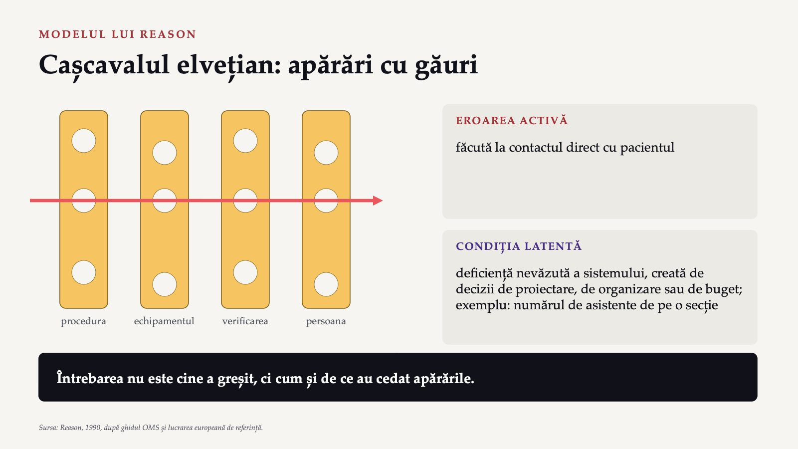
15 / 58Cine învață dintr-o greșeală?
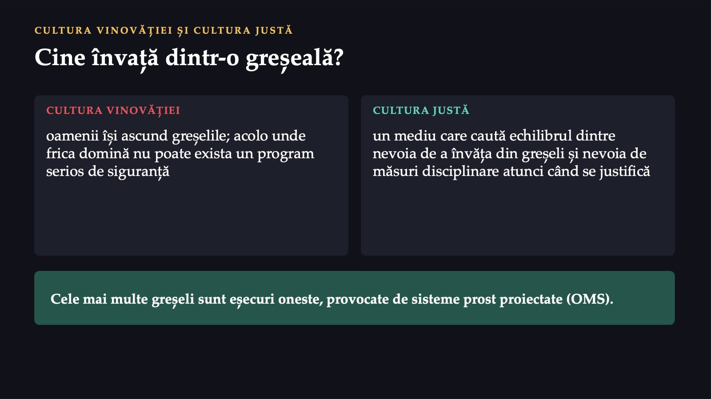
16 / 58Cultura justă nu înseamnă „nimeni nu răspunde”
![CULTURA JUSTĂ · SCHEMA DE LUCRU Cultura justă nu înseamnă „nimeni nu răspunde” EROAREA UMANĂ scăpare involuntară: reproiectăm sistemul, sprijinim persoana COMPORTAMENTUL RISCANT scurtătură cu risc nerecunoscut: îndrumare, înlăturarea motivelor tentației COMPORTAMENTUL IMPRUDENT ignorare conștientă a unui risc substanțial: singurul care justifică o sancțiune Criteriul: natura comportamentului, nu gravitatea rezultatului. Cel implicat suferă și el. Schemă de lucru a cursului. OMS: limite clare între eroare și neglijență.](diapozitive/C10/017.jpg) 17 / 58
17 / 58Cinci pași, de la echipă la măsură
![ANALIZA CAUZELOR-RĂDĂCINĂ Cinci pași, de la echipă la măsură Reconstituim faptele și întrebăm „de ce?”, până când sunt lămurite cauzele de fond. 1 Echipa: cunoaște procesul, nu a fost implicată direct; cei implicați sunt intervievați, nu judecați. 2 Cronologia: fapte și condiții, oră cu oră, fără calificative. 3 Factorii contributivi, căutați pe domenii. 4 Cauzele-rădăcină: cele care, corectate, previn cel mai probabil repetarea. 5 Măsurile: pentru fiecare, un responsabil, un termen și un indicator. Limite: presiunea timpului, lipsa pregătirii, a expertizei, a independenței (OMS, 2020).](diapozitive/C10/018.jpg) 18 / 58
18 / 58Aceeași noapte, citită pe domenii
 19 / 58
19 / 58Sala devine conferința de morbiditate și mortalitate
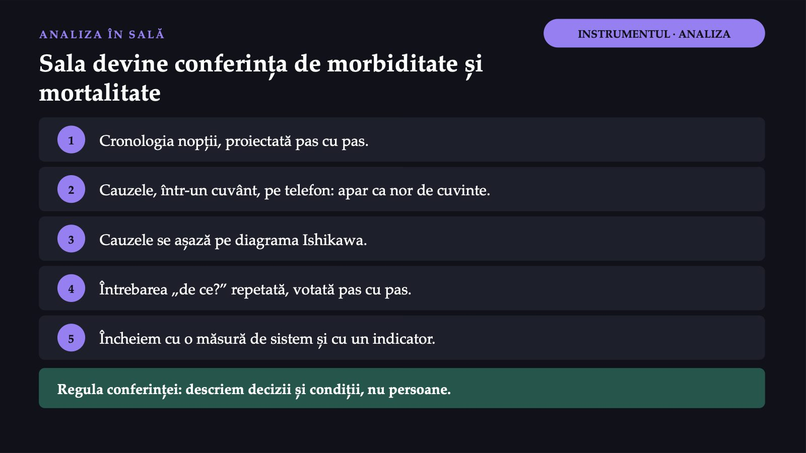
20 / 58Ce s-a întâmplat, fără vinovat numit
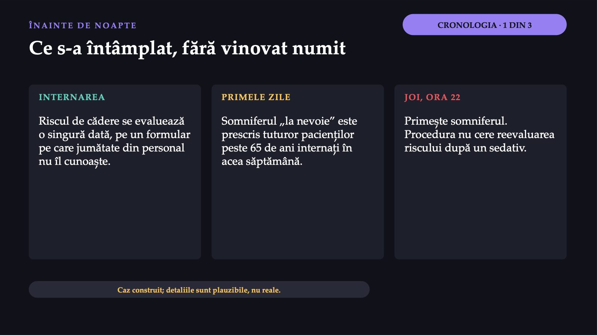
21 / 58Ce se afla în jurul patului
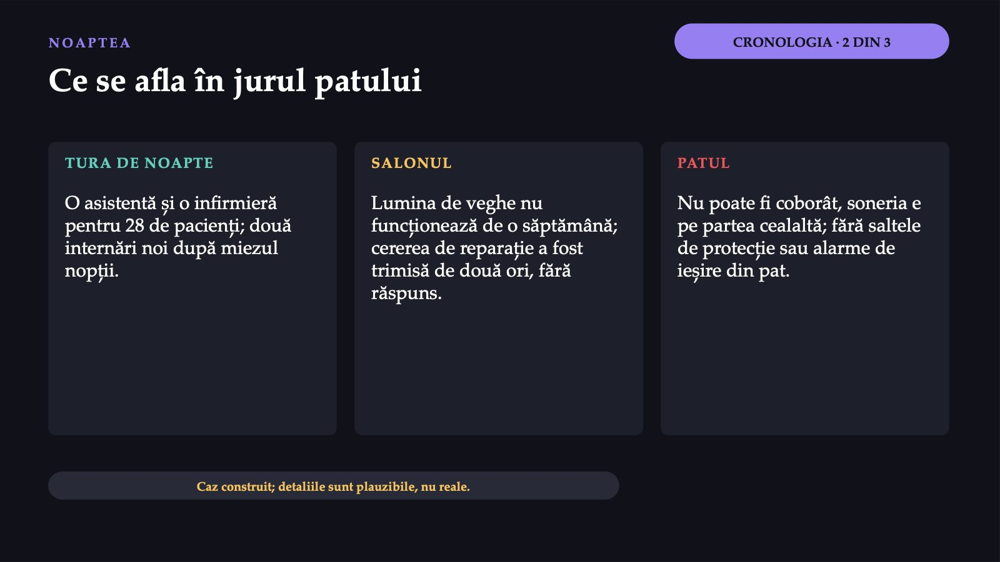
22 / 58Ora 3:10 și ultimele șase luni
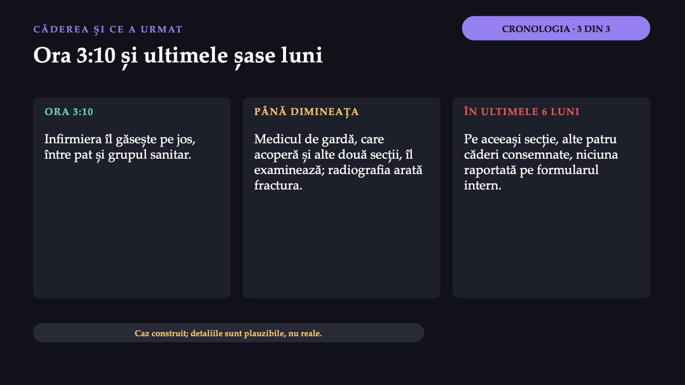
23 / 58Care este cauza cea mai importantă a căderii?
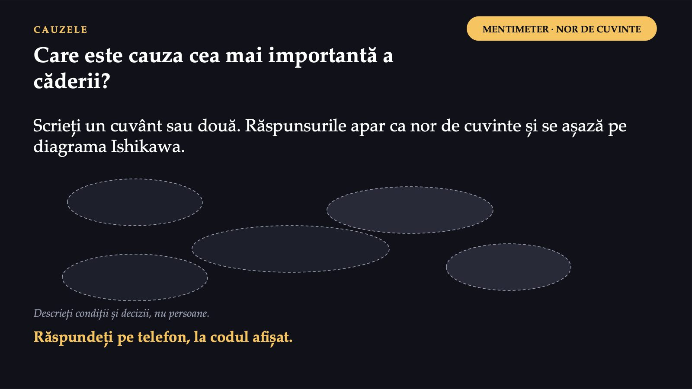
24 / 58Cădere cu fractură de col femural: cauzele posibile
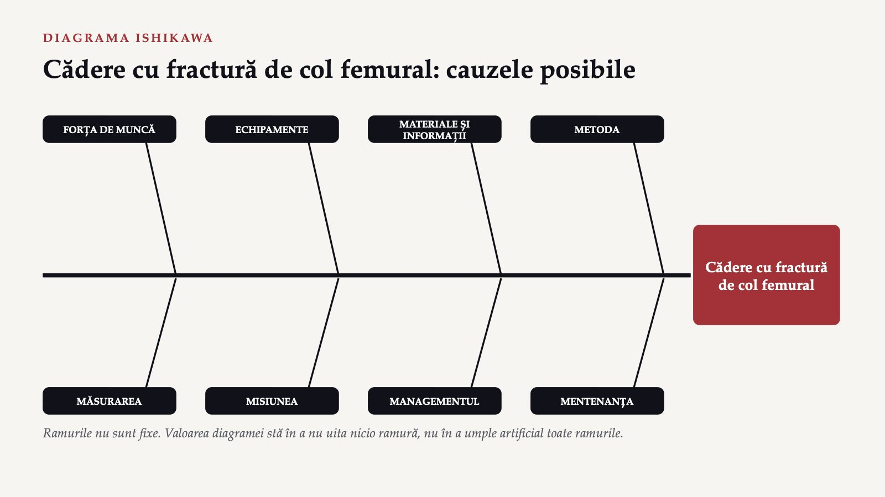
25 / 58Răspunsul apare după ședință
Răspunsul apare după ședință
Unde se oprește lanțul de „de ce?”
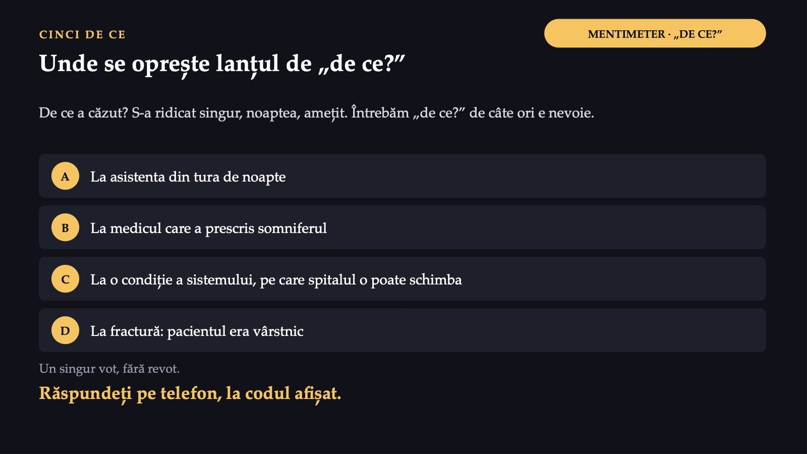
27 / 58Răspunsul apare după ședință
Răspunsul apare după ședință
Ce măsură principală alege comitetul director?
![MENTIMETER · VOTUL 2 A DOUA DECIZIE Ce măsură principală alege comitetul director? A Instruirea întregului personal și o circulară care cere „atenție sporită” pentru vârstnici B Sancțiunea disciplinară a asistentei din tura de noapte, ca semnal pentru restul personalului C Procedura secției: reevaluarea riscului la sedativ și la schimbarea stării, somnifer scos din prescrierea automată, paturi care coboară, raportare lunară D Interzicerea somniferelor pe toată secția, fără alte schimbări Vot individual, fără discuție. Răspundeți pe telefon, la codul afișat.](diapozitive/C10/029.jpg) 29 / 58
29 / 58Discutați, apoi votați din nou
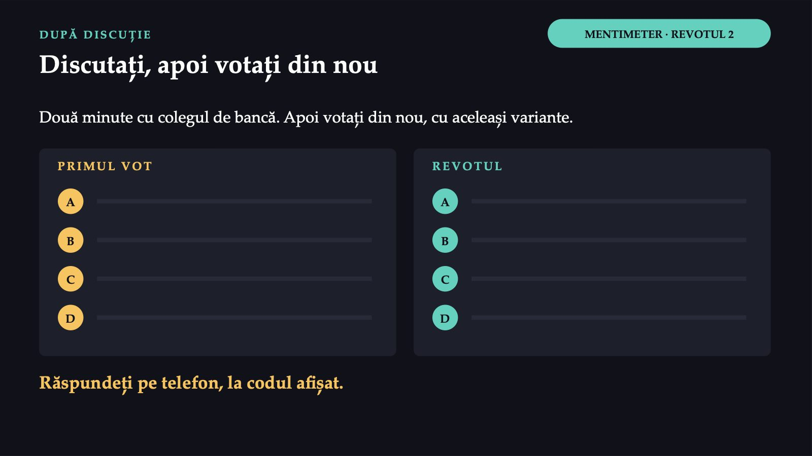
30 / 58Nu toate măsurile cântăresc la fel
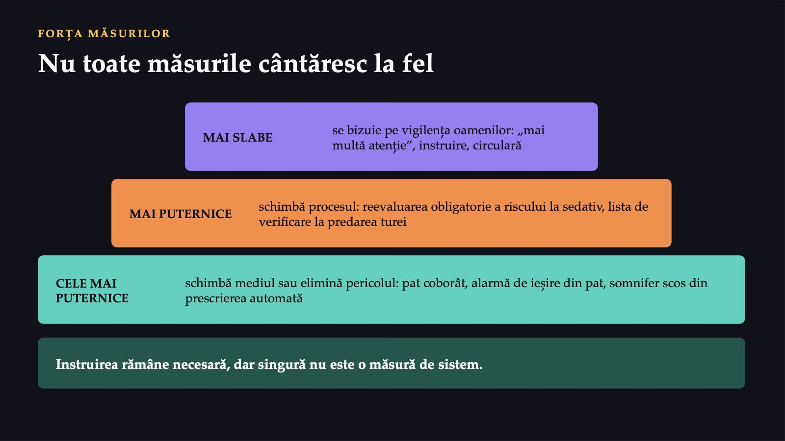
31 / 58O măsură spune ce, cine, până când și cum vom ști
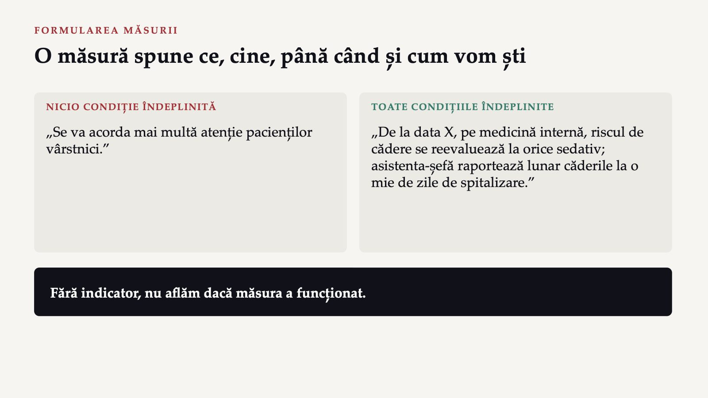
32 / 58Răspunsul apare după ședință
Răspunsul apare după ședință
Răspunsul apare după ședință
Răspunsul apare după ședință
Calitatea se judecă după bilanț
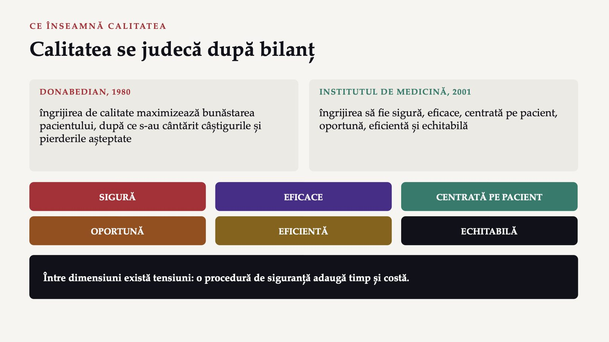
35 / 58Care dimensiune e cea mai neglijată?
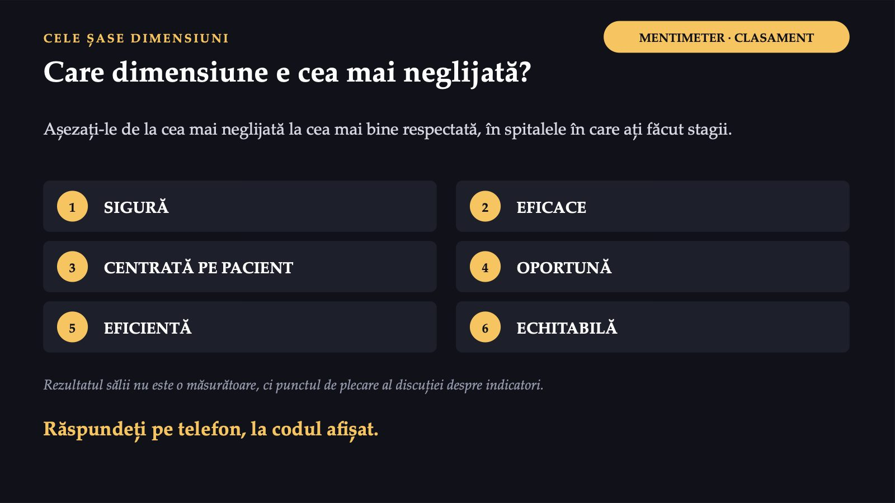
36 / 58Trei feluri de a măsura calitatea
![STRUCTURĂ, PROCES, REZULTAT Trei feluri de a măsura calitatea STRUCTURA cadrul îngrijirilor: clădiri, echipamente, medicamente, cunoștințe, sisteme informatice, profesioniști PROCESUL ce se face efectiv: prescrieri, intervenții, trimiteri; aprovizionarea, listele de așteptare REZULTATUL efectele asupra sănătății: mortalitate, morbiditate, dizabilitate, calitatea vieții; tensiunea arterială, capacitatea funcțională O structură bună crește probabilitatea unui proces bun, iar acesta a unui rezultat bun: o ipoteză de verificat, nu o garanție. Sursa: Donabedian, 1966.](diapozitive/C10/037.jpg) 37 / 58
37 / 58Fiecare tip de indicator are puncte tari și slabe
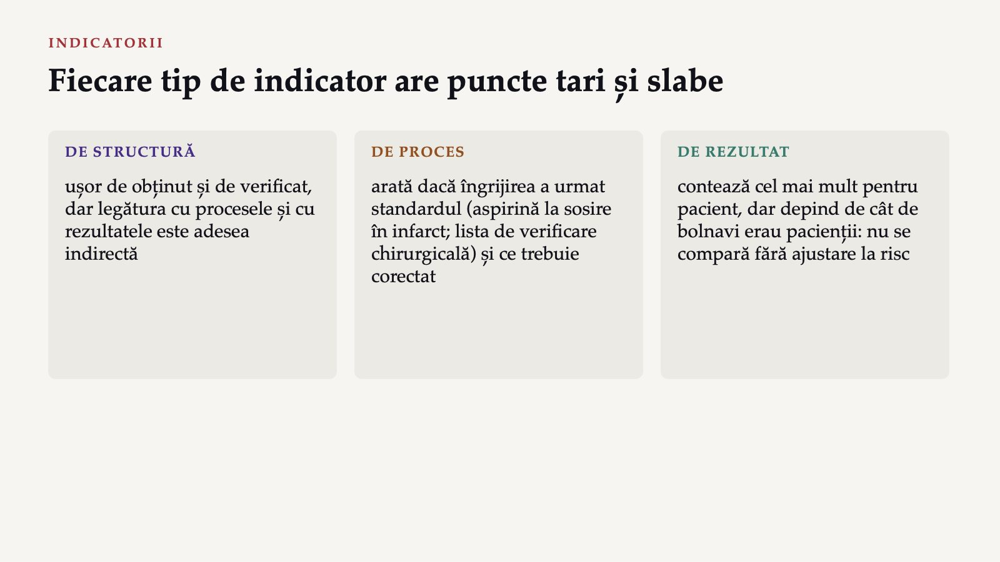
38 / 58Două filosofii ale calității
![ASIGURARE ȘI ÎMBUNĂTĂȚIRE Două filosofii ale calității ASIGURAREA CALITĂȚII ÎMBUNĂTĂȚIREA CALITĂȚII Urmărește evitarea problemelor, prin verificare și măsurare învățarea care duce la îmbunătățire continuă Servește răspunderea față de exterior schimbarea Se sprijină pe autoritatea externă, managerială autoritatea profesională internă Compară unitățile ca să emită judecăți asupra calității învețe din diferențe Acreditarea ține de asigurare; analiza unui eveniment advers, de îmbunătățire. Sursa: lucrarea europeană de referință, tabelul 3.1.](diapozitive/C10/039.jpg) 39 / 58
39 / 58Planifică, execută, verifică, acționează
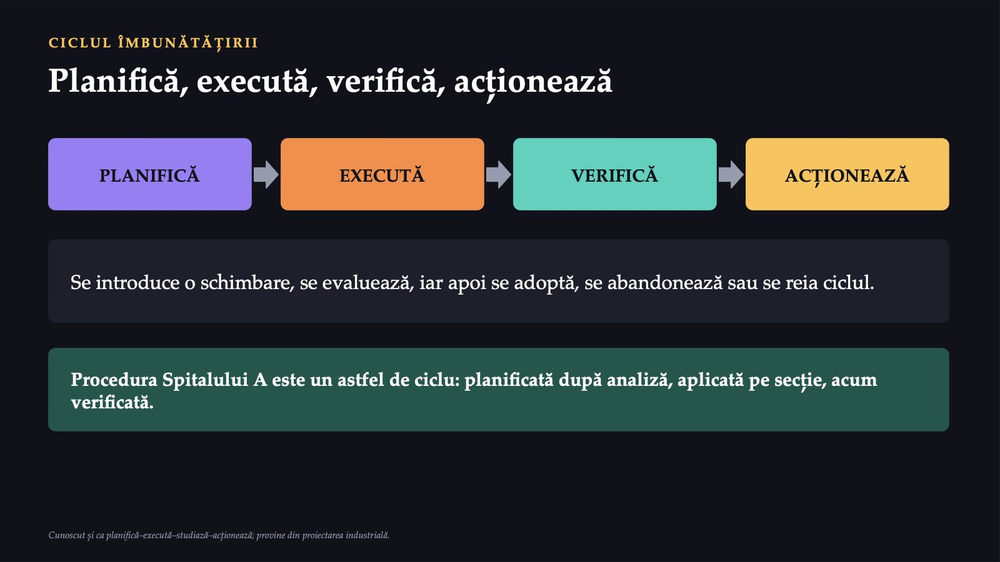
40 / 58Răspunsul apare după ședință
Răspunsul apare după ședință
Răspunsul apare după ședință
Răspunsul apare după ședință
Răspunsul apare după ședință
Răspunsul apare după ședință
6,5 zile
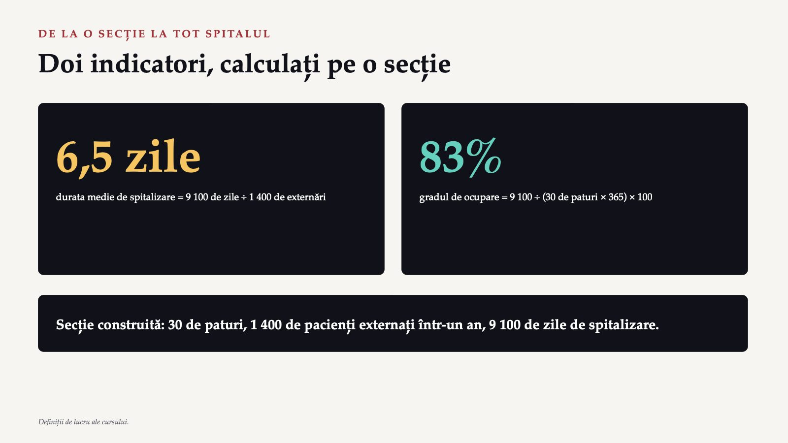
44 / 58Un indicator singur nu spune nimic
![CUM SE CITESC Un indicator singur nu spune nimic DURATA MEDIE mare: pacienți grei, complicații, întârzieri; mică: eficiență sau externare prematură; se compară ajustat OCUPAREA PATURILOR foarte mică: paturi în exces; foarte mare: nicio rezervă pentru urgențe; legătura cu infecțiile nu a rezistat analizei multivariate (ECDC) REINTERNĂRILE neplanificate în 30 de zile: durată mică și reinternări multe sugerează externări premature MORTALITATEA decese observate față de cele așteptate după gravitate; sub unu: mai puține decese decât așteptat](diapozitive/C10/045.jpg) 45 / 58
45 / 58Alfa și Beta, aceiași indicatori
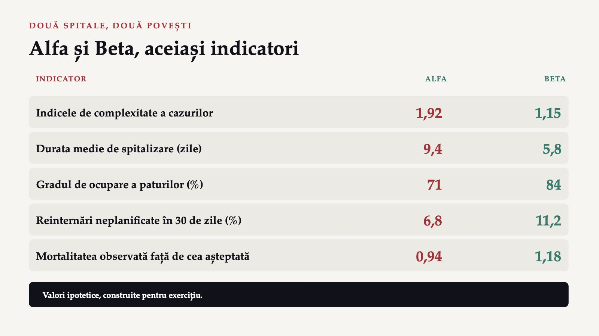
46 / 58Care spital are performanța mai bună?
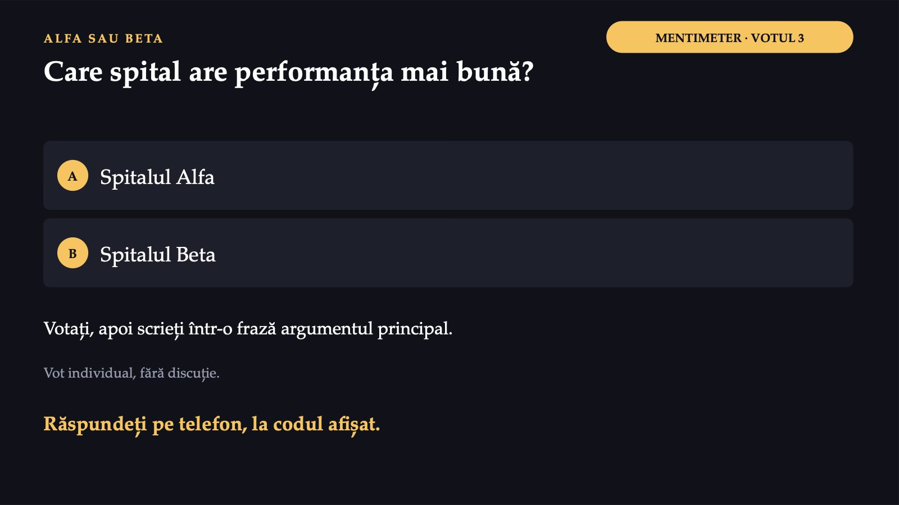
47 / 58Alfa sau Beta: votați încă o dată
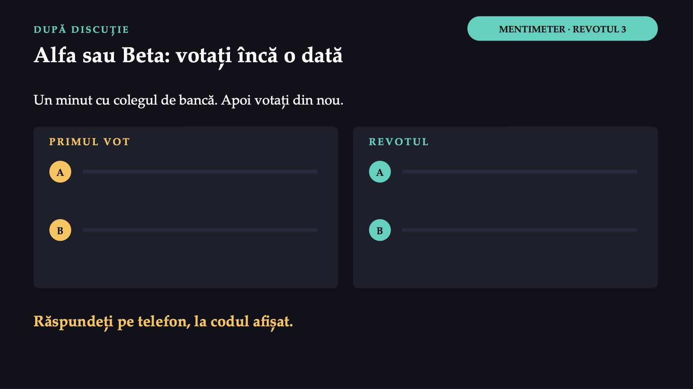
48 / 58Răspunsul apare după ședință
Răspunsul apare după ședință
Cu cine ne comparăm
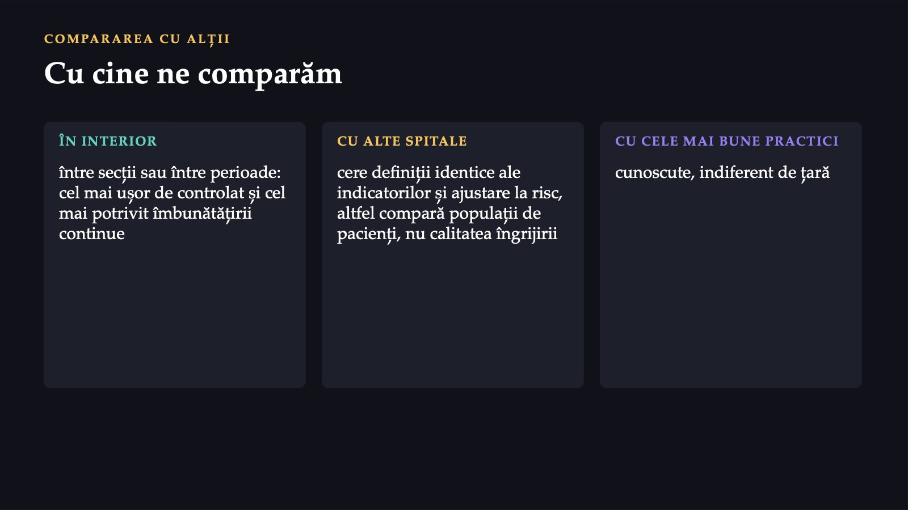
50 / 58Valoarea: rezultatele care contează, raportate la cost
![ÎNGRIJIREA BAZATĂ PE VALOARE Valoarea: rezultatele care contează, raportate la cost REZULTATE PE TREI NIVELURI starea de sănătate atinsă; procesul de recuperare; durabilitatea rezultatului ORGANIZAREA echipă dedicată unei afecțiuni, plătită printr-o sumă unică pentru tot ciclul PENTRU DOMNUL R. după șase luni, merge din nou singur? Cât a costat drumul, pentru el și pentru sistem? Într-un sistem plătit pe caz, reinternarea după o externare grăbită devine pierdere, nu venit. Metodă de lucru, după Porter (2010).](diapozitive/C10/051.jpg) 51 / 58
51 / 58Heparină oprită de farmacist: ce faceți?
![MENTIMETER · VOTUL 4 A TREIA DECIZIE · TRANSFERUL Heparină oprită de farmacist: ce faceți? Pe chirurgie, farmacistul observă, înainte ca medicamentul să plece pe secție, că s-a eliberat heparină de zece ori mai concentrată decât cea prescrisă: cele două concentrații stau în același sertar, cu etichete aproape identice. Pacientul nu a primit nimic. A Nimic: pacientul nu a fost vătămat, deci nu este un eveniment advers B Raportez ca incident care nu a ajuns la pacient și cer o analiză scurtă a depozitării C Consemnez întâmplarea numai în foaia de observație a pacientului D Cer sancționarea persoanei care a pregătit medicamentul Un singur vot, fără revot.](diapozitive/C10/052.jpg) 52 / 58
52 / 58Răspunsul apare după ședință
Răspunsul apare după ședință
Zece întrebări, în ordinea cursului
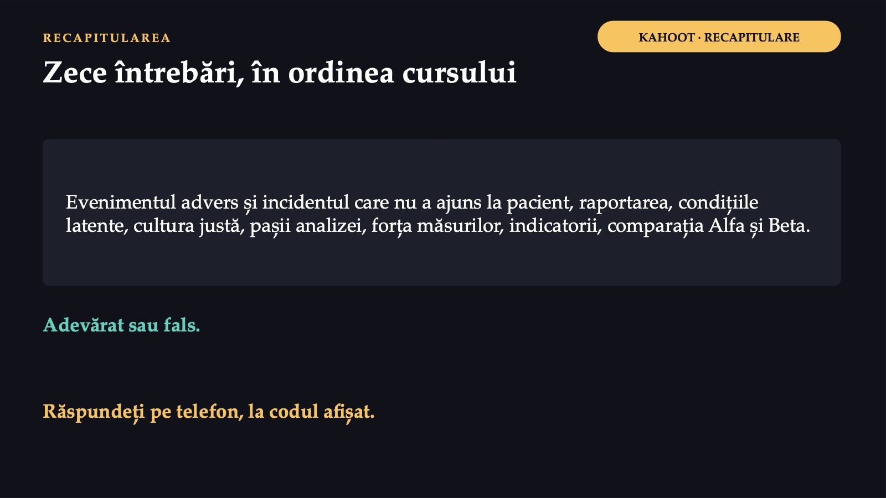
54 / 58Răspunsul apare după ședință
Răspunsul apare după ședință
Domnul R., de la cădere la indicator
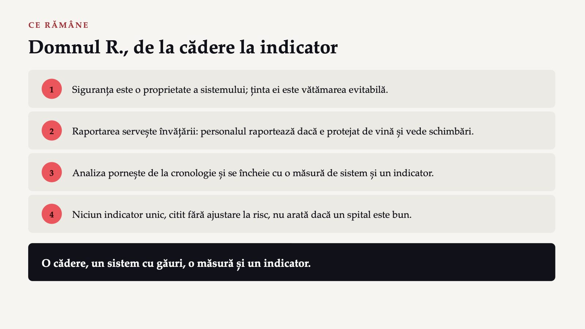
56 / 58Ce faceți diferit pe secție
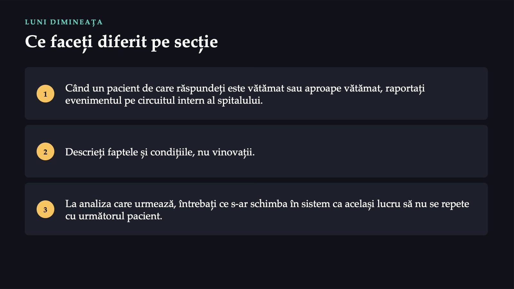
57 / 58Înainte să plecați
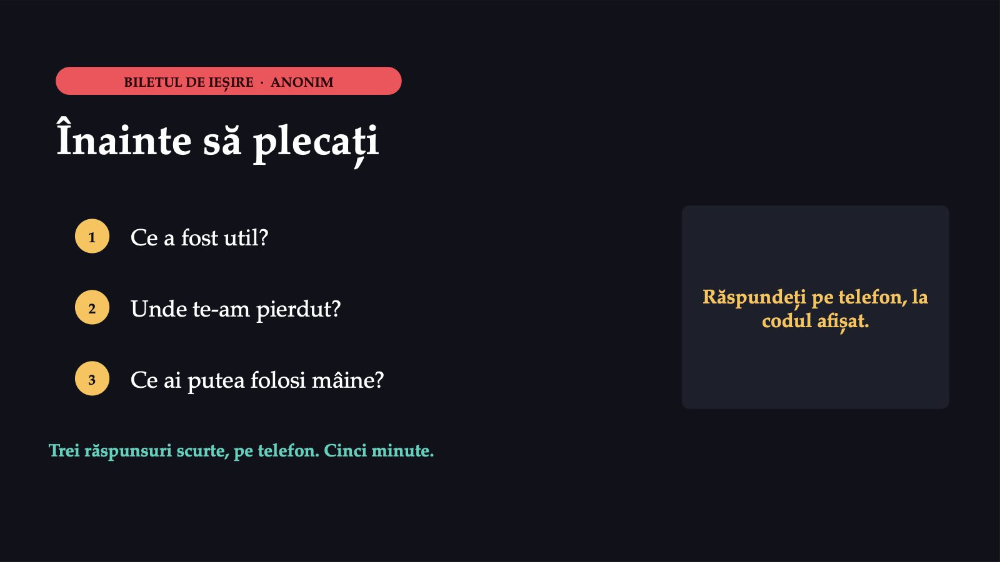
58 / 58Săgeți sau spațiu: navigare · O: vedere de ansamblu · N: notele prezentatorului · F: ecran complet · Esc: închidere